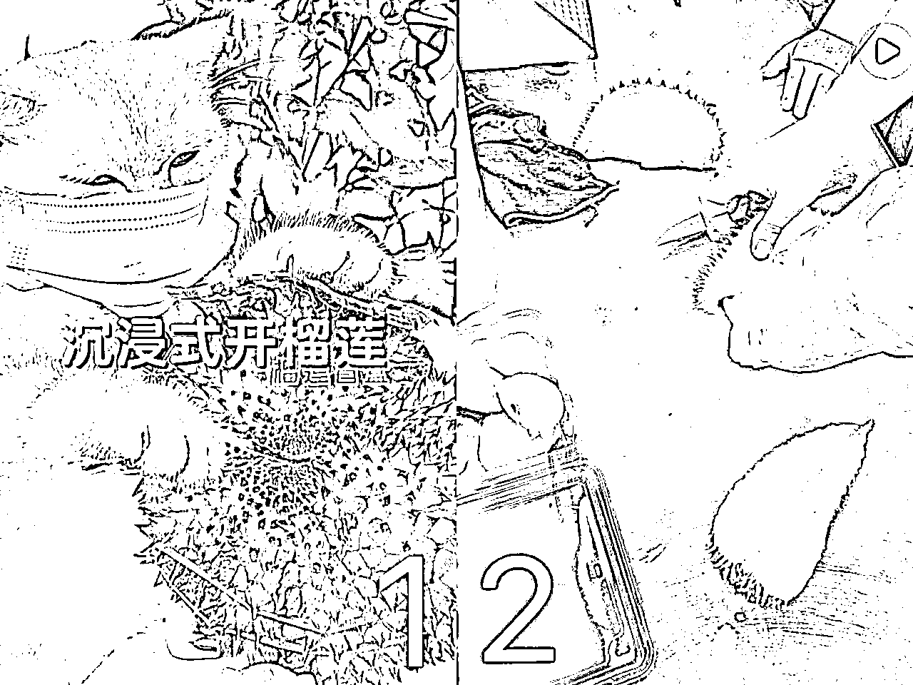
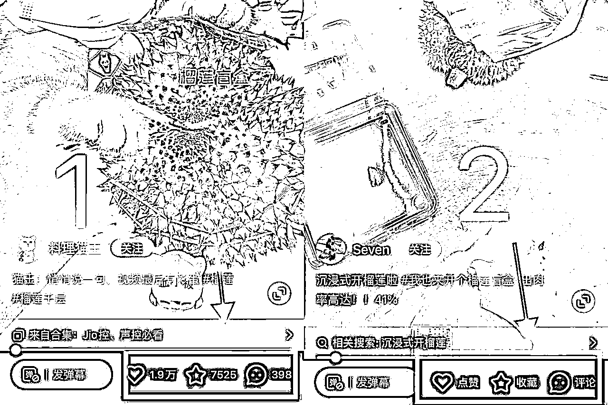
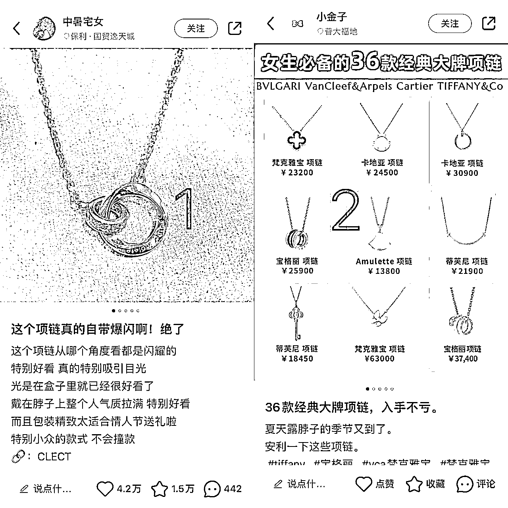
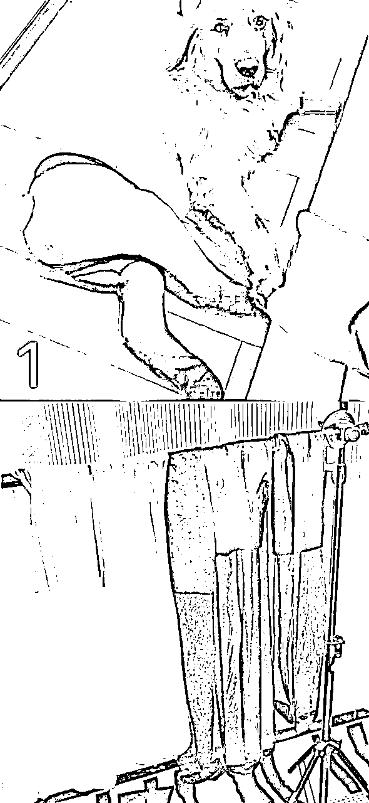
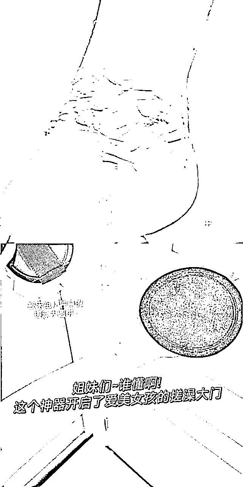
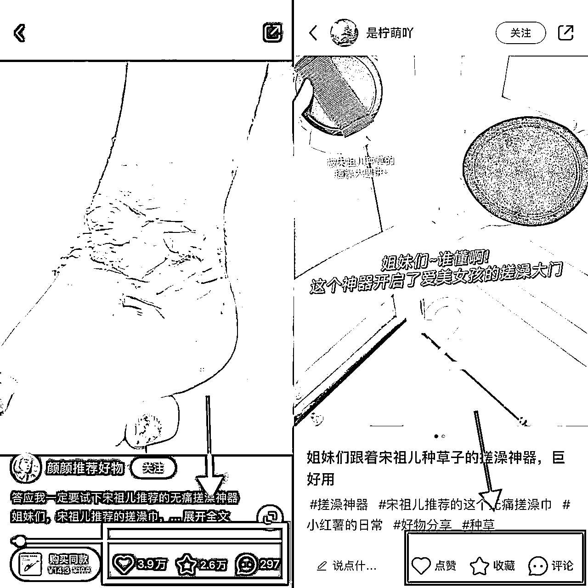
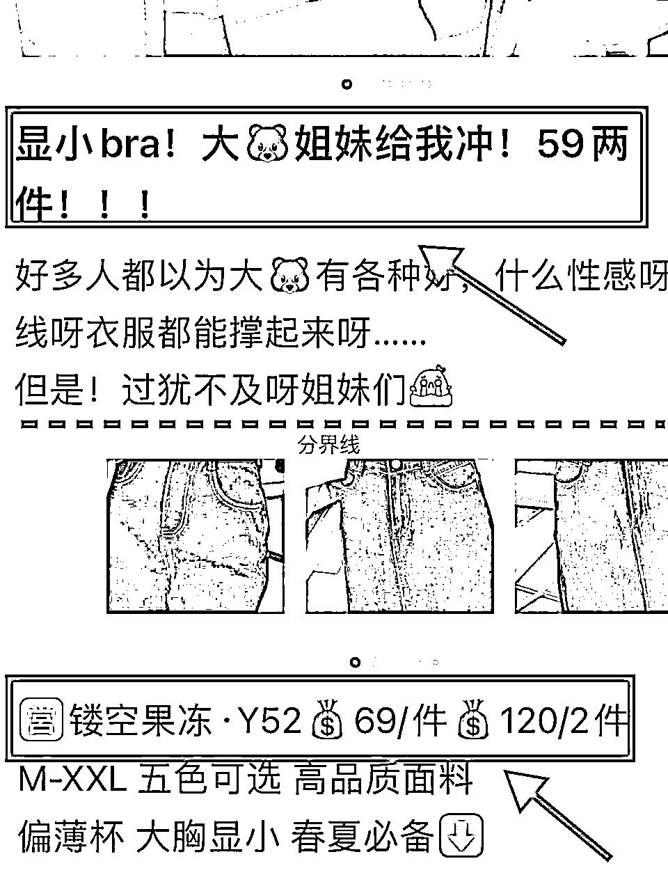

来源：https://nivut760ftk.feishu.cn/docx/AmxTdD4E5oK4uRxNwLYciH27naf
你好，我叫艾小飞，出生农村，背靠负债
在创业路上屡败屡战的95后，人称打不死的小强哈哈
来给大家分享下，决定小红书流量好坏的因素是什么
今天就不说什么干货操作流程了，就简单的给你们讲个思路吧
OK废话也不多说，直接开始进入主题
我先来给你们看张图，同样是沉浸式的开榴莲，单看封面，你会给哪个点赞呢

是不是觉得图1看起来会比较有意思对吧
然后我再给你们看看他们的各自数据怎么样

为什么相差会这么大呢？
是不是感觉一只猫去开榴莲，在生活中并不常见对吧，但如果是一个正常人去开榴莲的话，那就没什么新奇的了，这就是用反常识做出的内容
其实通过这个案例对比，就是想让你们知道，决定流量好坏的因素，就是靠内容的质量！
那好内容是怎么来的
在我眼里，一个好内容，必须要有人设，要有情感，要有温度
再给你们看到个案例，同样是项链
你们会更喜欢哪个

像第一张图，他是很自然的去介绍这款产品的感受和想法
但第二张图他就直接放了一张价格表，然后啥也不说了，是不是感觉整篇笔记都干巴巴的？
如果你想买项链，你会选择哪个呢？
这就是区别
那么做小红书也是一样的
你在小红书上想要获得更多的流量，那就要在你的内容上，加上一定的人设
什么是人设？
简单说就是一个有血有肉有性格的人，站在你面前跟你说话的那种感觉
人设是看不到但却能感受到的一种东西，就像人的性格一样
很多人刚开始做小红书发笔记的时候，就像是个机器人那样，发的内容都是硬生生的。毫无感情和温度。
因为用户都是喜欢有灵魂的东西。
如果你想要在小红书上卖货能出单，你发出的内容不单单要说出它的卖点，还要吐槽感受和想法
而你所吐槽的这些，就是你自己的人设
OK。既然知道了有人设的内容，是可以直接决定了流量的好坏，那么如何去做出一个好的内容呢？
如何做出好的内容
（在这里账号定位和选题方向我就不展开说了）
今天主要来说说直接影响流量的关键因素，封面和标题
你搞定了这两样，基本上流量都不会差到哪去了
我先来简单的说说封面吧
同样是丝袜，你们看看下面这两张图，你觉得哪张更能吸引你呢？

同样是卖搓澡神器的，你会选哪个

然后我再给你看看他们分别的数据

为什么差别会这么大呢？
是不是觉得这两张图都会有一个共同点。那就是通过封面给你展示的信息，在生活中并不常见的对吧
你觉得谁家的狗会穿丝袜去逛街呢，你去冲个澡怎么会天天搓出这么多的污垢呢
所以这两个案例对比，想给你们知道的是，只要你的封面做得比其他人更反常一些，那么能吸引到的流量就会更多一些
OK，那标题怎么做呢
我还是继续给你看个案例图吧
同样是卖内衣的，你感觉哪个标题更有吸引力

虽然我是男的，但作为用户视角，第一张图会更能吸引我去下单
你们看看第一张图，他的标题分别展示出了客户人群的需求、痛点和价格
那相对于第二张图来说，他只是展示了价钱而已，并没有过多的去介绍用户所关心的点
所以我给你们看这个案例，是希望你们起标题的时候，多去提炼客户的需求痛点和他们关心的价格
如果你的价格不是很有优势的话，那就突出画面感
比如
“穿上后男友都夸好看”，“出门被夸无数次的xxx”等这些
好啦，今天的分享比较简短一些，主要是给你们提供一个不同角度的思路
也通过案例对比来给你们看看，为何同样的产品，数据相差会那么大
也让你们知道小红书的流量好坏是由什么所决定的
方便你们以后做小红书的时候，可直接朝着那个方向去创作
好啦，今天的分享也到这了，谢谢大家
原创：艾小飞
转载可私信
禁止搬运和抄袭
微信：aifei9977 （记得备注来意）